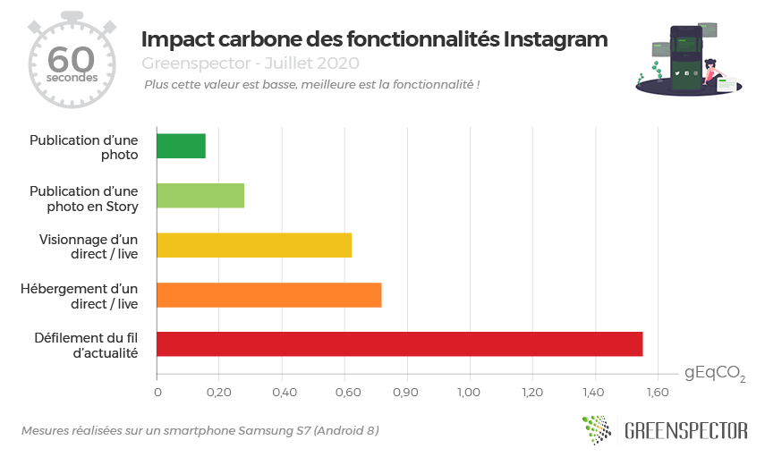
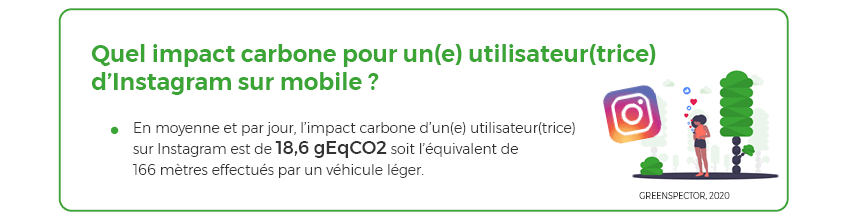
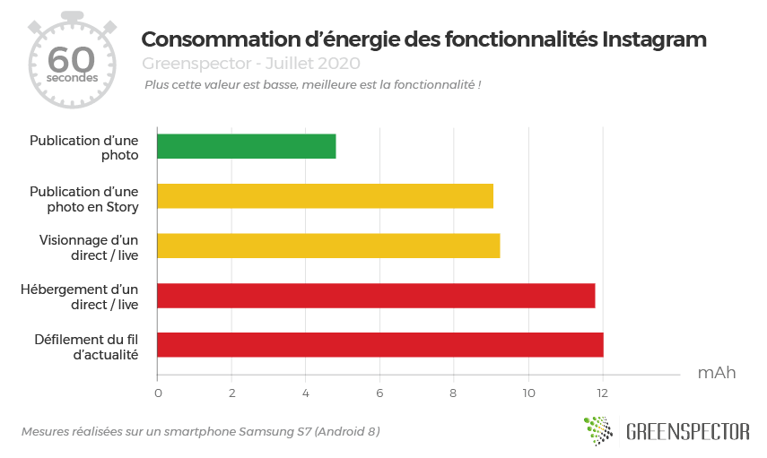
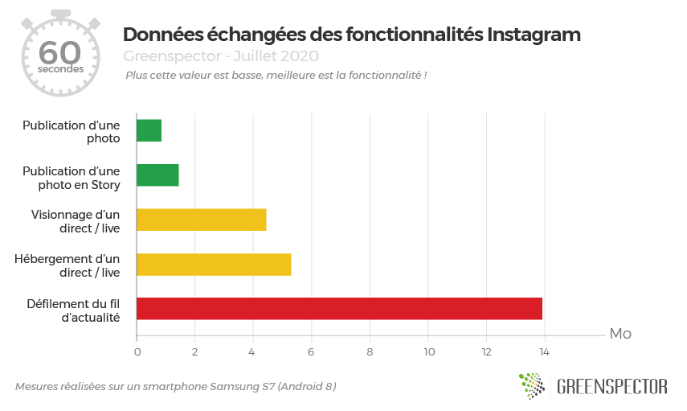

Vous êtes-vous déjà demandé quel était le coût environnemental d’une publication, d’une story, du visionnage d’un live ou du fil d’actualité d’Instagram ?
L’application lancée en 2010 comptabilise 1 milliard d’utilisateurs actifs mensuels (Source) dont 28 millions de visiteurs uniques par mois. En France, il s’agit de 11 millions de visiteurs uniques par jour. Instagram est le réseau social le plus fréquenté derrière Facebook.
Pour cette étude, nous avons choisi de mesurer l’impact carbone, la consommation d’énergie et de données sur 5 parcours utilisateur sur l’application mobile Instagram (version 148.0.0.33.121) :
- La publication d’une photo en story
- La publication d’une photo avec filtre et description en profil
- Le visionnage d’un direct / live Instagram
- L’hébergement d’un direct / live Instagram
- Le défilement du fil d’actualité
L’impact carbone des fonctionnalités d’Instagram par unité de temps de 1 minute

La fonctionnalité la moins impactante pour l’environnement sur une minute est la publication d’une photo (0,154 gEqCO2), c’est l’équivalent carbone de 1,3 mètres effectués par un véhicule léger / minute. Cette fonctionnalité consomme 10 fois moins que la plus impactante de nos mesures.
La fonctionnalité la plus impactante sur une minute est celle du défilement ou scroll du fil d’actualité (1,549 gEqCO2). Sur une minute, c’est l’équivalence de 13 mètres effectués en véhicule léger. À la fois composée de photos, vidéos et publicités (pour un compte actif), la fonctionnalité n’est pas la plus consommatrice en énergie (voir graphiques suivants), mais côté données échangées, c’est celle qui affiche la valeur la plus élevée (14,63 Mo pour une minute).
Pour ce qui est de la fonctionnalité « Live », que ce soit côté spectateur ou hébergeur, l’impact est quasiment le même (13% de moins pour le spectateur). La consommation d’énergie est similaire, néanmoins la partie spectateur échange moins de données.
Si l’on considère que la moyenne de l’impact carbone d’Instagram est de 0,664 gEqCO2 / minute (moyenne non pondérée de ces 5 usages) et que ses utilisateurs passent en moyenne 28 minutes / jour sur le réseau social (Source). Alors l’impact moyen d’un utilisateur sur Instagram est de 18,6 gEqCO2 / jour soit l’équivalent de 166 mètres effectués par un véhicule léger.

Consommation d’énergie des fonctionnalités Instagram pour 1 minute

Publier une photo sur son compte Instagram consomme 1,8 fois moins d’énergie que de publier une photo en Story (ramené sur un parcours utilisateur d’une minute) et 2,4 fois moins que d’héberger un Live. Les fonctionnalités liées aux Live / direct sont ici très consommateurs puisqu’il s’agit d’un flux vidéo en continu.
Données échangées des fonctionnalités Instagram pour 1 minute

L’association de photos, vidéos et publicités de la fonctionnalité du fil d’actualité impacte beaucoup son échange de données puisqu’elle doit charger de nouveaux éléments lors du défilement. Elle consomme d’ailleurs 2,6 fois plus de données que l’hébergement d’un live et 16 fois plus que la publication d’une photo (les parcours utilisateurs ramenés sur une minute d’utilisation)/
Méthodologie
L’application est mesurée sur un smartphone S7 (Android 8), les scénarios utilisateurs ont été réalisés au travers de notre GREENSPECTOR Test Runner, permettant la réalisation de tests automatisés.
Chaque mesure est la moyenne de 3 mesures homogènes (avec un écart-type faible). Les consommations mesurées sur le smartphone donné selon un réseau de type Wi-Fi peuvent être différentes sur un PC portable avec un réseau filaire par exemple.
Pour évaluer les impacts des infrastructures (datacenter, réseau) dans les calculs de projection carbone, nous nous sommes appuyés sur la méthodologie OneByte basée sur des données réelles mesurées du volume de données échangées. Cette méthodologie d’évaluation tient compte de la consommation de ressources et d’énergie en usage pour les équipements sollicités. Comme c’est une approche très macroscopique, elle est soumise à une incertitude et pourrait être affinée pour s’adapter à un contexte, à un outil donné. Pour la projection Carbone, nous avons pris l’hypothèse d’une projection 50% via un réseau wifi et 50% via un réseau mobile.
Pour évaluer les impacts du mobile dans les calculs de projections carbone, nous mesurons sur device réel la consommation d’énergie du scénario utilisateur et afin d’intégrer la quote-part d’impact matériel, nous nous appuyons sur le taux d’usure théorique généré par le scénario utilisateur sur la batterie, première pièce d’usure d’un smartphone. 500 cycles de charges et de décharges complètes occasionnent donc dans notre modèle un changement de smartphone.
Pour ceux qui aiment les chiffres
| Parcours utilisateur | Consommation d’énergie (mAh) | Données échangées (Mo) | Mémoire occupée (Mo) | Durée du test (seconde) | Impact Carbone (gEqCO2) / minute | Équivalence en mètres de voiture moyenne en France / minute |
| Publication d’une story | 3,32 | 0,522 | 410 | 22 | 0,277 | 2,47 |
| Publication d’une photo | 4,75 | 0,806 | 425 | 59 | 0,154 | 1,37 |
| Défilement du fil d’actualité | 9,7 | 14,63 | 460 | 63 | 1,549 | 13,83 |
| Hébergement d’un direct / live | 23,84 | 10,55 | 447 | 119 | 0,716 | 6,39 |
| Visionnage d’un direct / live | 23,39 | 8,78 | 522 | 119 | 0,622 | 5,55 |